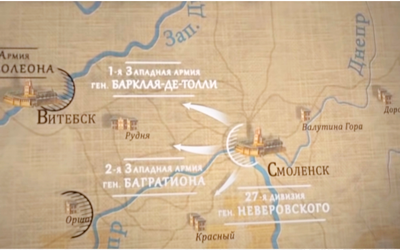
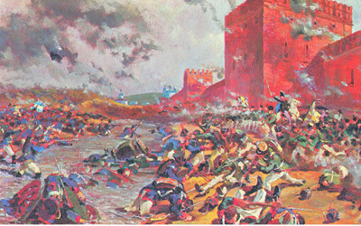

Битва за Смоленск
Наполеон жаждал генерального сражения. Он планировал как можно скорее разбить русских и вынудить тех заключить мир на условиях Наполеона. Но что-то пошло не так для французов. Русские постоянно избегали генерального сражения и уходили всё дальше на восток, в глубину территории России.
Между тем перед 10-ым корпусом наполеоновской армии стояла задача штурмом взять Ригу, соединиться со 2-ым французским корпусом и идти на Санкт-Петербург.
Направление на Петербург защищал 1-й русский корпус. В это время, 18-20 июля 1812 года, в тыл 2-го французского корпуса наполеоновской армии ударили гусары, — лёгкая кавалерия, способная внезапно появиться, нанести существенный урон и так же быстро скрыться. А во фронт ударил 1-й русский корпус.
Таким образом 2-ой французский корпус, понеся значительные потери, отступает к Полоцку. Тем самым наступление на Санкт-Петербург было сорвано.
Между тем основные русские армии, 1-я и 2-я, 22 июля 1812 года, наконец, соединяются западнее Смоленска. Здесь начинаются разногласия среди командования. Одни заявляют, что нужно немедленно атаковать Наполеона, другие, что нужно всё взвесить и не суетиться. Как результат, порешили разделить все русские силы в Смоленске на три части, выдвинуться к западу на 20-30 километров от Смоленска и держать оборону.
В ночь на 27 июля перебежчик от французов приносит информацию о численности французских войск. Русское командование в ужасе хватается за голову и Барклай-де-Толли Михаил Богданович, - главнокомандующий всей русской армией, отдаёт немедленный приказ: срочно вернуть все войска в Смоленск. А между тем Наполеон основными силами уже двигается к Смоленску с юга.
У посёлка Красный три кавалерийских корпуса Наполеона, общей численностью 30-тыс. всадников, встретились лицом к лицу с 27-ой русской дивизией, которая насчитывала 7200 бойцов.
Тем не менее, 2 августа 1812 года взять посёлок Красный сходу французам не удалось. Вскоре к французам подходит 24-ый лёгкий полк. Русские встают в два больших каре в свой последний бой против лавины вражеской кавалерии, несущейся на них. Орудия располагают между каре. Кавалерия прикрывает пехоту . Это была одна из самых ожесточённых баталий всей войны.
Вскоре у русских остаётся сил лишь на построение в одно каре. Затем русские начинают медленное отступление, сохраняя строй. Французы предприняли более 40 атак, но безуспешно. Опрокинуть русских французской кавалерии не удаётся. Это лишь в компьютерных играх конница сминает всё на своём пути. В реалии, лошади пугаются выстрелов и штыков и не бросаются сломя голову напролом, а порой наоборот и вовсе перестают слушаться всадника и двигаются совершенно хаотично.
Более суток 27-я дивизия отступает с боем. Расположив на возвышенности орудия, русские открыли оттуда огонь. Французы, решив что к русским подошло подкрепление, более не атакуют. Это спасает 27-ю дивизию от полного уничтожения, остатки доходят до Смоленска. Наполеон двигается по пятам. Тем временем 1-я и 2-я русские армии находятся ещё к западу от Смоленска в 30-40 километрах.
4 августа 1812 года французы начинают штурм Смоленска с юга. К ночи в Смоленск возвращаются 1-я и 2-я русские армии. Таким образом в районе Смоленска сконцентрировались все основные силы двух сторон: около 110 тыс. русских солдат и около 183 тыс. французско-европейских.
Наполеон было потирал руки, что наконец-то здесь, в Смоленске, он разобьёт основные силы русских и выиграет всю кампанию. Однако русские вновь начинают планомерное отступление из Смоленска на восток к Дорогобужу и далее к Москве. В Смоленске оставляют корпус ген. Дохтурова для заслона. Дохтуров выводит весь свой корпус за стены города и солдаты занимают оборону. Французы ринулись в атаку.
Тем временем из восточных ворот города нескончаемой вереницей выходят войска вперемешку с обозами мирных жителей. Город полыхает. Жители, покидая свои дома, поджигают их. Русские солдаты сдерживают французов почти сутки. Когда все способные уйти из Смоленска уходят, последние русские солдаты также организованно покидают Смоленск и уходят на восток. Наполеон не входит в Смоленск, он ждёт, когда город догорит полностью.